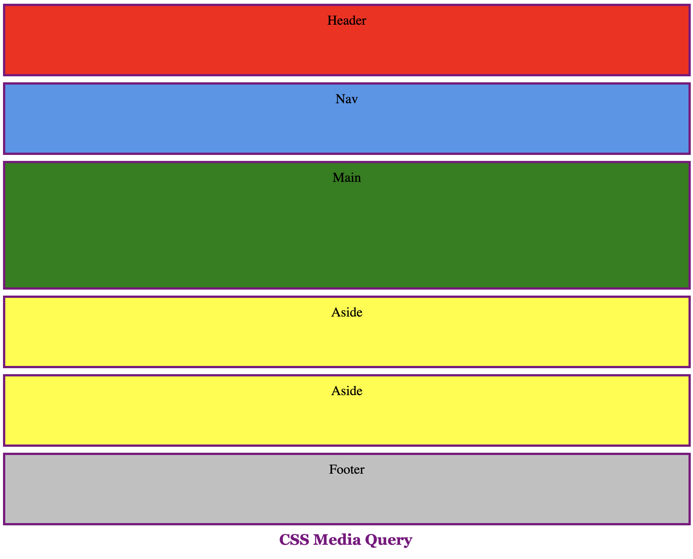
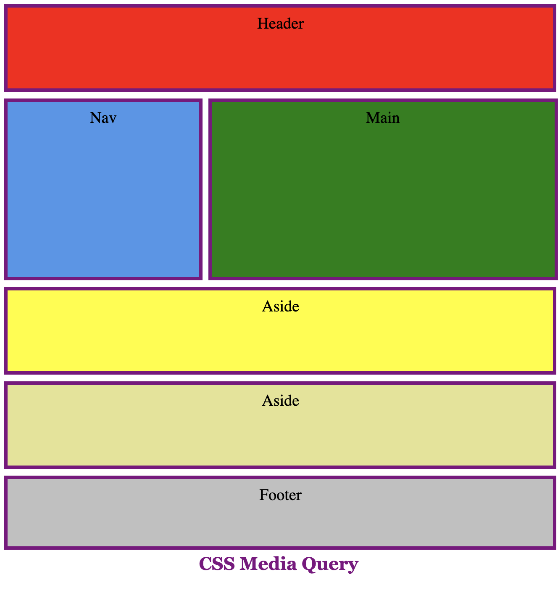
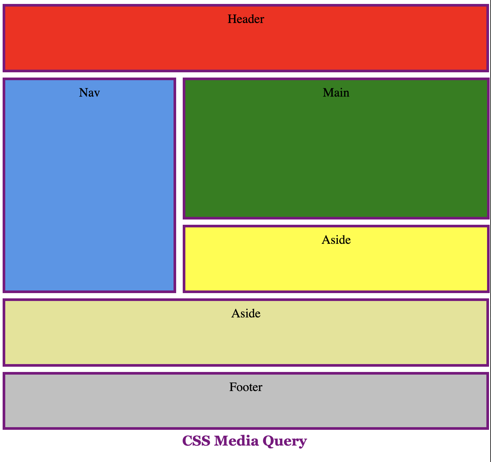
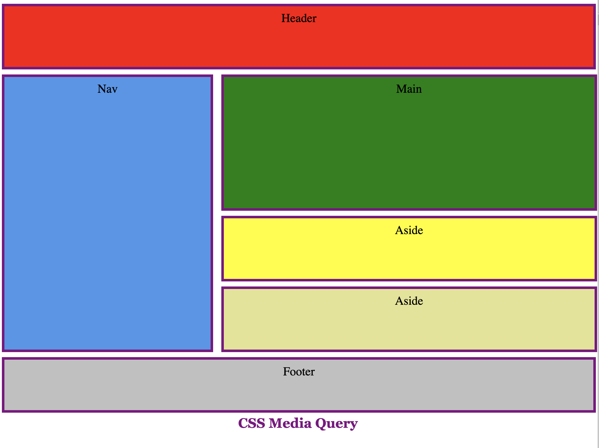

Worksheet 10
SYST10049 Web Development
- Work through the material in Week 10
- Work through the examples below. Test, observe, document, try to recreate yourself; dig deeper and research properties and values used…
- Practice!
Complete the following excercises
- Download this file download and change it to three new layouts (see below) when the width of screen is at 600px, 850px, and 1100px respectively.
- Use Embeded Media Query, and
- Use External Media Query, and
- Float
- CSS Flexbox
- CSS Grid
- Use @import Media Query and
- Float
- CSS Flexbox
- CSS Grid
Original
Layout at 600px
Layout at 850px
Layout at 1100px

Web Development @ Sheridan College